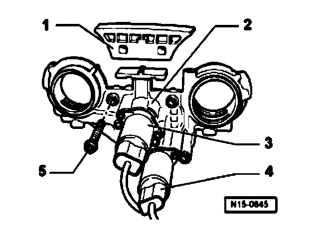

Disassembling and Assembling Control Housing

Disassembling and assembling control housing
1 - Guide rail- Clipped onto control housing
2 - Control housing
3 - Valve -1- for camshaft adjustment N205
4 - Camshaft adjustment valve 1, (exhaust) N318
5 - 8 Nm